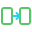

$ translation toolkit — plants vs zombies: fusion
PVZF Console Manager
One console for the whole Plants vs Zombies: Fusion translation workflow.
Diff every locale against the source, write per-locale reports, rebuild the tip and buff files, catch duplicates, export a Trello backlog, and turn the weekly PR recap into contributor documentation. Everything runs locally.
## What it does
Four tools, one console. Click any card to watch that tool run in the demo terminal.
Show what's missing
Diffs a locale against the source across 8 categories and writes one Markdown report per category — each missing entry printed as the exact JSON block to translate. Optional *_diff.json for re-injection.

Migrate files
Builds the tip, buff and custom-level files a locale does not have yet, pulling each translation from its own translation_strings.json. Never overwrites an existing file.
Export & audit
One Trello-ready CSV per category plus a generated import guide, and a duplicate scanner that catches repeated JSON keys and translations reused across keys.
Author the docs
Splits the weekly translation-PR recap into one Markdown block per contributor, counters included — the lead's Reviews block is derived, not typed. Nothing is written until you confirm.
## Try the console
This is not a video — click the terminal and drive it yourself with ↑ ↓ Enter Esc, exactly like the real thing. Or let it loop through a session on its own.
KEYS — HERE AND IN THE REAL THING
Past ten locales the picker turns into a type-to-filter list; All locales runs the whole set at once.
OR HEADLESS — CLICK TO COPY
CI-friendly exit codes: 0 success · 1 failure · 2 bad arguments.
## Everything lives in the open
Strict TypeScript, tested with Vitest, CI on Windows, macOS and Linux. Issues and PRs welcome.
npx-ready, one bundled file, Node 20 or newer. Settings are remembered across runs.
usage · catalog · outputs · configuration · architecture · troubleshooting
The dev loop, code standards, and the four-step drill for adding a new translation category. Starring the repo or filing a precise bug report helps just as much.
If it saved you an evening of hand-diffing: Ko-fi (one-off, no account) or GitHub Sponsors.
Maintained by Charles Lindecker — @LINDECKER-Charles on GitHub.